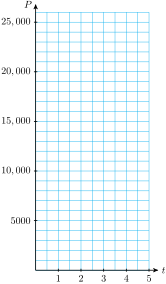
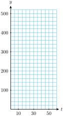

Subsection 7.1.1 Introduction
While completing the next Investigation, keep in mind that using an exponent, or raising to a power, means repeated multiplication by the base.
Investigation 7.1.1. Population Growth.
In a laboratory experiment, researchers establish a colony of \(100\) bacteria and monitor its growth. The colony triples in population every day.
| \(\hphantom{0}t\hphantom{0}\) |
\(P(t)\) |
|
|
| \(~0~\) |
\(100\) |
|
\(\blert{P(0)=100}\) |
| \(~1~\) |
\(\) |
|
\(\blert{P(1)=100\cdot 3=}\) |
| \(~2~\) |
\(\) |
|
\(\blert{P(2)=[100\cdot 3]\cdot 3=}\) |
| \(~3~\) |
\(\) |
|
\(\blert{P(3)=}\) |
| \(~4~\) |
\(\) |
|
\(\blert{P(4)=}\) |
| \(~5~\) |
\(\) |
|
\(\blert{P(5)=}\) |
Fill in the table showing the population \(P(t)\) of bacteria \(t\) days later.
Plot the data points from the table and connect them with a smooth curve.
Write a function that gives the population of the colony at any time \(t\text{,}\) in days. Hint: Express the values you calculated in part (1) using powers of \(3\text{.}\) What connection do you see between the value of \(t\) and the exponent on \(3\text{?}\)
Graph your function from part (3) using technology. (Use the table to choose an appropriate window.) The graph should resemble your hand-drawn graph from part (2).
Evaluate your function to find the number of bacteria present after 8 days. How many bacteria are present after 36 hours (1.5 days)?

The function in
Investigation 7.1.1 describes
exponential growth. During each time interval of a fixed length, the population is multiplied by a certain constant amount. In this case, the bacteria population grows by a factor of 3 every day.
For this reason, we say that 3 is the growth factor for the function.
Subsection 7.1.2 Growth Factors
Researchers often use cell lines from the fruit fly Drosophila melanogaster to study protein interactions related to cancer and other diseases. From 60% to 70% of human disease genes are found in Drosophila cells, and gene discoveries in the flies have led to parallel studies in vertebrates.
One milliliter of culture contains about 1 million Drosophila cells, and the population doubles every 24 hours. The table shows the population, \(P(t)\text{,}\) of Drosophila cells, in millions, as a function of time in days.
|
\(t\) (days) |
\(P(t)\) (millions) |
| \(0\) |
\(1\) |
| \(1\) |
\(2\) |
| \(2\) |
\(4\) |
| \(3\) |
\(8\) |
| \(4\) |
\(16\) |
| \(5\) |
\(32\) |
| \(6\) |
\(64\) |
Looking at the table, we see that we multiply the fruit fly population by 2 every day, so that after \(t\) days, the initial population is multiplied by \(2^t\text{.}\) Because the population grows by a factor of 2 each day, the function \(P(t)\) describes exponential growth. We can express functions that describe exponential growth in a standard form.
Exponential Growth.
The function
\begin{gather*}
\blert{P(t)=P_0 b^t}
\end{gather*}
describes exponential growth, where \(P_0=P(0)\) is the initial value of the function and the positive constant \(b\) is the growth factor.
For the Drosophila cell population, the growth factor is \(b=2\text{,}\) and the initial value is \(P_0 = 1\) million cells, so we have
\begin{gather*}
P(t)=1 \cdot 2^t
\end{gather*}
There is a sort of similarity between the formula for exponential functions and the formula for linear functions. Each has an initial value and a constant that describes change. But compare the graph of exponential growth, described by a constant growth factor, with linear growth. You can see that the graph of the fruit fly population is not a straight line with a constant slope, as a linear function would be.
Example 7.1.1.
In 1985, there were about 1.2 million cell phone users world-wide. For some years after that time, the number grew by a factor of 1.5 each year.
Let \(C(t)\) be the number of cell phone users \(t\) years after 1985 according to this model. Make a table of values and graph \(C(t)\text{.}\)
Write a formula for \(C(t).\)
How many cell phone users does this model predict for the year 2000?
Do you think this model will be valid indefinitely? Why or why not?
Solution.
-
We let \(t=0\) in 1985, so \(C(0)=1.2\text{,}\) in millions. Each value of \(C(t)\) can be obtained by multiplying the previous value by the growth factor, 1.5.
| \(\hphantom{0}t\hphantom{0}\) |
\(C(t)\) |
\(\) |
| \(0\) |
\(1.2\) |
\(\) |
| \(1\) |
\(1.8\) |
\(\blert{1.2\times 1.5 = 1.8}\) |
| \(2\) |
\(2.7\) |
\(\blert{1.8\times 1.5 = 2.7}\) |
| \(3\) |
\(4.05\) |
\(\blert{2.7\times 1.5 = 4.05}\) |
| \(4\) |
\(6.08\) |
\(\blert{4.05\times 1.5 = 6.08}\) |
| \(5\) |
\(9.1\) |
\(\blert{6.08\times 1.5 = 9.1}\) |
| \(6\) |
\(13.7\) |
\(\blert{9.1\times 1.5 = 13.7}\) |
| \(7\) |
\(20.5\) |
\(\blert{13.7\times 1.5 = 20.5}\) |
The initial value of the function is
\(C_0 = C(0) = 1.2\) million. The annual growth factor is
\(b=1.5\text{,}\) so the formula is
\begin{equation*}
C(t) = 1.2(1.5)^t
\end{equation*}
The year 2000 is 15 years after 1985, so we evaluate the function for
\(t = \alert{15}\text{.}\)
\begin{equation*}
C(\alert{15}) = 1.2(1.5)^{\alert{15}} = 525.47
\end{equation*}
The formula predicts that over 525 million people used cell phones in 2000.
It is unlikely that the model will be valid indefinitely, because \(C(t)\) will eventually exceed the population of Earth.
Once again, in the examples above, you can see that the graphs of these exponential functions are not linear. In each case, the function grows slowly at first, but eventually grows faster and faster.
Checkpoint 7.1.3. QuickCheck 1.
A population grows according to the formula \(P(t) = 800(1.06)^t\text{,}\) where \(t\) is in years.
What was the starting value of the population?
What was the population one year later?
What does 1.06 tell you about the population?
Choose the correct first step to evaluate \(800(1.06)^5\text{:}\)
Multiply 800 by 1.06 or
Raise 1.06 to the 5th power
In the next Practice, we consider a population that doubles not every month, but every three months.
Checkpoint 7.1.4. Practice 1.
A colony of rabbits started with 20 rabbits and doubles every 3 months.
Complete the table for the number of rabbits \(P(t)\) after \(t\) months, and graph the function.
How is the exponent on the base 2 related to \(t\text{?}\) Write a formula for the function \(P(t)\text{.}\)
How many rabbits will there be after 1 year?
| \(\hphantom{0}t\hphantom{0}\) |
\(~P(t)~\) |
\(\) |
| \(0\) |
\(\hphantom{000}\) |
\(\blert{P_0 = 20}\) |
| \(3\) |
\(\hphantom{000}\) |
\(\blert{20 \cdot 2}\) |
| \(6\) |
\(\hphantom{000}\) |
\(\blert{20 \cdot 2^2}\) |
| \(9\) |
\(\hphantom{000}\) |
\(\blert{20 \cdot 2^3}\) |
| \(12\) |
\(\hphantom{000}\) |
\(\blert{20 \cdot 2^4}\) |
| \(15\) |
\(\hphantom{000}\) |
\(\blert{20 \cdot 2^5}\) |
Answer.
| \(\hphantom{0}t\hphantom{0}\) |
\(P(t)\) |
| \(0\) |
\(20\) |
| \(3\) |
\(40\) |
| \(6\) |
\(80\) |
| \(9\) |
\(160\) |
| \(12\) |
\(320\) |
| \(15\) |
\(640\) |
The exponent is the value of \(t\) divided by 3. \(~P(t)=20(2)^{t/3}\)
320 rabbits
Now suppose we would like to know the monthly growth factor for the rabbit population, that is, by what factor did the population grow every month?
Recall that when we raise a power to a power we can multiply the exponents, like this:
\begin{equation*}
(a^m)^n = a^{mn}
\end{equation*}
For example,
\begin{equation*}
(x^3)^2 = x^{2\cdot 3} = x^6
\end{equation*}
Using the same idea for the rabbit population, we can see that
\begin{equation*}
(2^{1/3})^t = 2^{t(1/3)} = 2^{t/3}
\end{equation*}
So the growth factor for the rabbit population is \(2^{1/3}\text{,}\) or about 1.26. The rabbit population grows by a factor of 1.26 every month.
Subsection 7.1.3 Comparing Linear Growth and Exponential Growth
It may be helpful to compare linear growth and exponential growth. Consider the two functions
\begin{equation*}
L(t) = 5 + 2t ~~~~~\text{ and } ~~~~~ E(t) = 5 \cdot 2^t ~~~ (t \ge 0)
\end{equation*}
whose graphs are shown below.
| \(\hphantom{0}t\hphantom{0}\) |
\(L(t)\) |
| \(0\) |
\(5\) |
| \(1\) |
\(7\) |
| \(2\) |
\(9\) |
| \(3\) |
\(11\) |
| \(4\) |
\(13\) |
Slope \(m=2\)
| \(\hphantom{0}t\hphantom{0}\) |
\(E(t)\) |
| \(0\) |
\(5\) |
| \(1\) |
\(10\) |
| \(2\) |
\(20\) |
| \(3\) |
\(40\) |
| \(4\) |
\(80\) |
Growth factor \(b=2\)
\(L\) is a linear function with \(y\)-intercept 5 and slope 2; \(E\) is an exponential function with initial value 5 and growth factor 2. In a way, the growth factor of an exponential function is analogous to the slope of a linear function: Each measures how quickly the function is increasing.
However, for each unit increase in \(t\text{,}\) 2 units are added to the value of \(L(t)\text{,}\) whereas the value of \(E(t)\) is multiplied by 2. An exponential function with growth factor 2 eventually grows much more rapidly than a linear function with slope 2, as you can see by comparing the graphs or the function values in the tables.
Example 7.1.6.
A solar energy company sold $80,000 worth of solar collectors last year, its first year of operation. This year its sales rose to $88,000. The marketing department must estimate its projected sales for the next 3 years.
If the marketing department predicts that sales will grow linearly, what sales total should it expect next year? Graph the projected sales figures over the next 3 years, assuming that sales will grow linearly.
If the marketing department predicts that sales will grow exponentially, what sales total should it expect next year? Graph the projected sales figures over the next 3 years, assuming that sales will grow exponentially.
Solution.
Let \(L(t)\) represent the company’s total sales \(t\) years after starting business, where \(t = 0\) is the first year of operation. If sales grow linearly, then \(L(t)\) has the form \(L(t) = mt + b\text{.}\) Because \(L(0) = 80,000\text{,}\) the intercept \(b\) is 80,000. The slope \(m\) of the graph is
\begin{equation*}
\dfrac{\Delta S}{\Delta t}= \dfrac{8000 \text{ dollars}}{1\text{ year}}= 8000 \text{ dollars/year}
\end{equation*}
where \(\Delta S = 8000\) is the increase in sales during the first year. Thus, \(L(t) = 8000t + 80,000\text{,}\) and sales grow by adding $8000 each year. The expected sales total for the next year is
\begin{equation*}
L(2) = 8000(2) + 80,000 = 96,000
\end{equation*}
Let \(E(t)\) represent the company’s sales assuming that sales will grow exponentially. Then \(E(t)\) has the form \(E(t) = E_0 b^t\text{,}\) and the initial value is \(E_0 = 80,000\text{.}\) We find the growth factor in sales over the first year by dividing \(E(1)\) by \(E_0\text{:}\)
\begin{align*}
E(1) \amp = E_0 b^1\\
\text{so}~~b \amp = \dfrac{E(1)}{E_0} = \dfrac{88,000}{80,000} = 1.1
\end{align*}
Thus, \(E(t) = 80,000(1.1)^t\text{,}\) and the expected sales total for the next year is
\begin{equation*}
E(2) = 80,000(1.10)^2= 96,800
\end{equation*}
We evaluate each function at several points to obtain the graphs shown in the figure.
| \(\hphantom{0}t\hphantom{0}\) |
\(L(t)\) |
\(E(t)\) |
| \(0\) |
\(80,000\) |
\(80,000\) |
| \(1\) |
\(88,000\) |
\(88,000\) |
| \(2\) |
\(96,000\) |
\(96,800\) |
| \(3\) |
\(104,000\) |
\(106,480\) |
| \(4\) |
\(112,000\) |
\(117,128\) |
Subsection 7.1.4 Exponential Decay
In the examples above, exponential growth was modeled by increasing functions of the form
\begin{equation*}
P(t) = P_0 b^t
\end{equation*}
where the growth factor, \(b\text{,}\) is a number greater than 1. If we multiply the function value by a number smaller than 1, t he function values will decrease. \(~\alert{\text{[TK]}}~\) Thus, if \(0 \lt b \lt 1\text{,}\) then \(P(t) = P_0b^t\) is a decreasing function. In this case, we say that the function describes exponential decay, and the constant \(b\) is called the decay factor.
Investigation 7.1.2. Exponential Decay.
A small coal-mining town has been losing population since 1940, when 5000 people lived there. At each census thereafter (taken at 10-year intervals), the population declined to approximately 0.90 of its earlier figure.
| \(\hphantom{0}t\hphantom{0}\) |
\(P(t)\) |
|
|
| \(0\) |
\(5000\) |
|
\(\blert{P(0)=5000}\) |
| \(10\) |
\(\) |
|
\(\blert{P(10)=5000\cdot 0.90=}\) |
| \(20\) |
\(\) |
|
\(\blert{P(20)=[5000\cdot 0.90]\cdot 0.90=}\) |
| \(30\) |
\(\) |
|
\(\blert{P(3)=}\) |
| \(40\) |
\(\) |
|
\(\blert{P(4)=}\) |
| \(50\) |
\(\) |
|
\(\blert{P(5)=}\) |
Fill in the table showing the population \(P(t)\) of the town \(t\) years after 1940.
Plot the data points and connect them with a smooth curve.
-
Write a function that gives the population of the town at any time \(t\) in years after 1940.
Hint: Express the values you calculated in part (1) using powers of 0.90. What is the connection between the value of \(t\) and the exponent on 0.90?
Graph your function from part (3) using technology. (Use the table to choose an appropriate window.) The graph should resemble your hand-drawn graph from part (2).
Evaluate your function to find the population of the town in 1995. What was the population in 2000?

Example 7.1.8.
Before the introduction of disposable containers, soft drinks and draught beer were sold in refillable glass botles. During the second half of the last century, the percent of beer volume sold in refillable glass bottles declined to 0.942 of its previous value each year.
In 1944, 98% of beer was sold in refillable bottles. Write a formula for the percent of beer sold in refillable bottles as a function of \(t\text{,}\) the number of years after 1944.
Graph the function from 1944 to 2000.
In 1998, only 3.3% of beer was sold in refillable bottles. How well does the model predict this number?
Solution.
We let \(t=0\) in 1944, so that \(P_0 = 98\text{.}\) The formula is
\begin{equation*}
P(t)=P_0 b^t = 90(0.942)^t
\end{equation*}
-
We evaluate the formula for several values of \(t\text{,}\) and plot the data points.
| Year |
1950 |
1965 |
1980 |
1995 |
| \(t\) |
\(6\) |
\(21\) |
\(36\) |
\(51\) |
| \(P(t)\) |
68.5% |
27.9% |
11.4% |
4.7% |
In 1998, \(t=54\text{,}\) and
\begin{equation*}
P(54) = 98(0.942)^{54} = 3.89
\end{equation*}
The model predicts that 3.89% of beer was sold in refillable bottles in 1998, just slightly above the actual figure.
Checkpoint 7.1.9. Practice 2.
The number of perch in Hidden Lake has declined to 0.88 of its previous value every year since 2000, when the perch population was estimated at 8000.
-
Let \(P(t)\) represent the perch population \(t\) years after 2000. Complete the table.
| \(t\) |
\(0\) |
\(2\) |
\(8\) |
\(10\) |
\(15\) |
\(20\) |
| \(P(t)\) |
\(\hphantom{000}\) |
\(\hphantom{000}\) |
\(\hphantom{000}\) |
\(\hphantom{000}\) |
\(\hphantom{000}\) |
\(\hphantom{000}\) |
Write a formula for the function \(P(t)\text{.}\)
Graph the function, using the table values to choose an appropriate window.
What does the model predict for the perch population in 2025?
Answer.
| \(t\) |
\(2\) |
\(8\) |
\(10\) |
\(15\) |
\(20\) |
| \(P(t)\) |
\(6195\) |
\(2877\) |
\(2228\) |
\(1176\) |
\(621\) |
\(\displaystyle P(t) = 8000(0.88)^t\)
327
Checkpoint 7.1.10. QuickCheck 2.
Complete the statement or answer the question.
We can tell whether a linear function is increasing or decreasing by whether its slope is .
We can tell whether an exponential function is increasing or decreasing by whether \(b\) is .
If a linear function has slope 1.5, each time we increase the input by 1 unit, how do we find the new function value from the old one?
If an exponential function has growth factor 1.5, each time we increase the input by 1 unit, how do we find the new function value from the old one?
Subsection 7.1.5 Percent Increase
Exponential growth is often described as growth by a certain percent increase. Suppose the town of Lakeview had 4000 residents in the year 2000, and grew at a rate of 5% per year. This means that each year we add 5% of last year’s population to find the current population, \(P(t)\text{.}\) Thus
\begin{align*}
\text{In 2000, } P(0) \amp = 4000\\
\text{In 2001, } P(1) \amp = 4000 + \blert{0.05(4000)} = 4200 \amp\amp \blert{\text{Add 5}\% \text{ of } P(0).}\\
\text{In 2002, } P(2) \amp = 4200 + \blert{0.05(4200)} = 4410 \amp\amp \blert{\text{Add 5}\% \text{ of } P(1).}
\end{align*}
and so on. Now here is the important observation about percent increase:
\begin{equation*}
\bf{\text{Adding 5% of the old population is the same as multiplying the old population by 1.05.}}
\end{equation*}
\begin{align*}
4000 + 0.05(4000) \amp = 4000(1+0.05) = 4000(1.05) \amp \amp \blert{\text{Factor out 4000.}}\\
4200 + 0.05(4200) \amp = 4200(1+0.05) = 4200(1.05) \amp \amp \blert{\text{Factor out 4000.}}
\end{align*}
Thus, we can find the current population by multiplying the old population by 1.05. In other words,
\begin{equation*}
\bf{\text{Growing by 5% is the same as growing by a factor of 1.05.}}
\end{equation*}
A formula for the population of Lakeview \(t\) years after 2000 is
\begin{equation*}
P(t) = 4000(1.05)^t
\end{equation*}
This formula describes exponential growth with a growth factor of \(b=1.05\text{.}\) In general, a function that grows at a percent rate \(r\text{,}\) where \(r\) is expressed as a decimal, has a growth factor of \(b=1+r\text{.}\)
Growth by a Constant Percent.
The function
\begin{gather*}
\blert{P(t) =P_0 (1+r)^t}
\end{gather*}
describes exponential growth at a constant percent rate of growth, \(r\text{.}\)
The initial value of the function is \(P_0 = P(0)\text{,}\) and \(b=1+r\) is the growth factor.
Many quantities besides population can grow by a fixed percent. For example, an inflation rate gives the percent rate at which prices are rising.
Example 7.1.11.
During a period of rapid inflation, prices rose by 12% each year. At the beginning of this time, a loaf of bread cost $2.
Make a table showing the cost of bread over the next four years.
Write a function that gives the price of a loaf of bread \(t\) years after inflation began.
How much did a loaf of bread cost after 6 years? After 30 months? \(~\alert{\text{[TK]}}\)
Graph the function found in (b).
Solution.
-
The percent increase in the cost of bread is 12% every year. Therefore, the growth factor for the cost of bread is \(1+0.12 = 1.12\) every year. If \(P(t)\) represents the price of bread after \(t\) years, then \(P(0)=2\text{,}\) and we multiply the price by 1.12 every year, as shown in the table.
| \(\hphantom{0}t\hphantom{0}\) |
\(\hphantom{0}P(t)\hphantom{0}\) |
\(\) |
\(\) |
| \(0\) |
\(2.00\) |
|
\(\blert{P(0)=2}\) |
| \(1\) |
\(2.24\) |
|
\(\blert{P(1)=2(1.12)}\) |
| \(2\) |
\(2.51\) |
|
\(\blert{P(2)=2(1.12)^2}\) |
| \(3\) |
\(2.81\) |
|
\(\blert{P(3)=2(1.12)^3}\) |
| \(4\) |
\(3.15\) |
|
\(\blert{P(4)=2(1.12)^4}\) |
After
\(t\) years of inflation the original price of $2 has been multiplied
\(t\) times by a factor of 1.12. Thus,
\begin{equation*}
P(t)=2(1.12)^t
\end{equation*}
To find the price of bread at any time after inflation began, we evaluate the function at the appropriate value of
\(t\text{.}\)
\begin{equation*}
P(\alert{6}) = 2(1.12)^{\alert{6}} \approx 3.95
\end{equation*}
After 6 years the price was $3.95. Thirty months is 2.5 years, so we evaluate
\(P(2.5)\text{.}\)
\begin{equation*}
P(\alert{2.5}) = 2(1.12)^{\alert{2.5}} \approx 2.66
\end{equation*}
After 30 months the price was $2.66.
To graph the function
\begin{gather*}
P(t) = 2(1.12)^t
\end{gather*}
we evaluate it for several values, as shown in the table. We plot the points and connect them with a smooth curve to obtain the graph shown.
Checkpoint 7.1.12. QuickCheck 3.
Fill in the blanks.
Increasing by 10% is the same as multiplying by .
If a population grows by 2% annually, its growth factor is .
If a population grows by 46% annually, its growth factor is .
If a population grows by 100% annually, its growth factor is .
Checkpoint 7.1.13. Practice 3.
Tombstone, Arizona was the most famous "boomtown" during the gold rush in the American west. It was established in December, 1879, after the discovery of a large silver deposit nearby. The original town had 40 dwellings and a population of 100. Over the next two to three years, the population grew at an average rate of 19% per month.
What was the population one year later, in December, 1880?
Write a formula for \(P(t)\text{,}\) the population of Tombstone \(t\) months after its founding.
-
Complete the table and sketch a graph of \(P(t)\text{.}\)
| \(t\) |
\(0\) |
\(5\) |
\(10\) |
\(15\) |
\(20\) |
\(25\) |
| \(P(t)\) |
\(\hphantom{000}\) |
\(\hphantom{000}\) |
\(\hphantom{000}\) |
\(\hphantom{000}\) |
\(\hphantom{000}\) |
\(\hphantom{000}\) |
Tombstone’s peak population was about 10,000 people. Use your graph to estimate the time it took to reach that figure.
Answer.
806
\(\displaystyle P(t)=100(1.19)^t\)
-
| \(t\) |
\(0\) |
\(5\) |
\(10\) |
\(15\) |
\(20\) |
\(25\) |
| \(P(t)\) |
100 |
239 |
569 |
1359 |
3243 |
7739 |
About 26 months
Compound interest is another example of exponential growth. Suppose you deposit a sum of money into an account that pays 5% interest compounded annually. Each year, 5% of your current balance is added to your account as interest, so your balance grows by a factor of 1.05. In general, we have the following formula.
Compound Interest.
If a principal of \(P\) dollars is invested in an account that pays an interest rate \(r\) compounded annually, the balance \(B\) after \(t\) years is given by
\begin{equation*}
\blert{B=P(1+r)^t}
\end{equation*}
Subsection 7.1.6 Percent Decrease
We have seen that a percent increase of \(r\) (in decimal form) corresponds to a growth factor of \(b=1+r\text{.}\) A percent decrease of \(r\) corresponds to a decay factor of \(b=1-r\text{.}\) For example, if a population declines by 25% each year, then each year the new population is 75% of its previous value. So
\begin{equation*}
b = 1-0.25 = 0.75
\end{equation*}
and \(P(t) = P_0 (0.75)^t\text{.}\) Remember that multiplying by \(b\) gives us the population remaining, not the amount of decline. \(~\alert{\text{[TK]}}\)
Example 7.1.14.
According to Context magazine: "Computing prices have been falling exponentially for the past 30 years and will probably stay on that curve for another couple of decades." In fact, prices have been falling at a rate of 37% every year. Suppose an accounting firm invests $50,000 this year in new computer equipment.
Write a formula for the cost \(C(t)\) of similar equipment \(t\) years from now.
What would the same equipment cost 5 years from now?
Graph the function \(C(t)\) for \(0 \le t \le 20\text{.}\)
Solution.
The current cost of the equipment is \(C_0 = 50,000\text{.}\) Every year, the cost of similar equipment is multiplied by
\begin{equation*}
b=1-r=1-0.37 = 0.63
\end{equation*}
After \(t\) years, the cost of that equipment is
\begin{equation*}
C(t)=50,000(0.63)^t
\end{equation*}
After 5 years, we have
\begin{equation*}
C(\alert{5}) = 50,000(0.63)^{\alert{5}} = 4962.18
\end{equation*}
The cost of the equipment after 5 years is $4962.18.
We evaluate the function \(C(t)\) for several values of \(t\text{,}\) and plot the points to obtain the graph shown.
| \(t\) |
\(2\) |
\(4\) |
\(6\) |
\(10\) |
\(12\) |
| \(C(t)\) |
\(19,845\) |
\(7876\) |
\(3126\) |
\(492\) |
\(195\) |
Checkpoint 7.1.16. Practice 4.
The number of butterflies visiting a nature station is declining by 18% per year. In 1998, 3600 butterflies visited the nature station.
What is the decay factor in the annual butterfly count?
Write a formula for \(B(t)\text{,}\) the number of butterflies \(t\) years after 1998.
-
Complete the table and sketch a graph of \(B(t)\text{.}\)
| \(t\) |
\(0\) |
\(2\) |
\(4\) |
\(6\) |
\(8\) |
\(10\) |
| \(B(t)\) |
\(\hphantom{000}\) |
\(\hphantom{000}\) |
\(\hphantom{000}\) |
\(\hphantom{000}\) |
\(\hphantom{000}\) |
\(\hphantom{000}\) |
Answer.
\(\displaystyle 0.82\)
\(\displaystyle B(t) = 3600\cdot 0.82^t\)
| \(t\) |
\(0\) |
\(2\) |
\(4\) |
\(6\) |
\(8\) |
\(10\) |
| \(B(t)\) |
\(3600\) |
\(2421\) |
\(1628\) |
\(1094\) |
\(736\) |
\(495\) |
Checkpoint 7.1.18. QuickCheck 4.
Complete the statement or answer the question.
If \(b=0.9\text{,}\) it represents a decrease of %.
An annual decrease of 15% corresponds to a decay factor of .
Which function decreases more rapidly: \(f(x)\text{,}\) with a decay factor of 0.15, or \(g(x)\text{,}\) with a decay factor of 0.05?
An exponential function \(P(t)=P_0b^t\) is decreasing if .
We summarize our observations about exponential growth and decay functions as follows.
Exponential Growth and Decay.
The function
\begin{gather*}
\blert{P(t) = P_0 b^t}
\end{gather*}
models exponential growth and decay.
Checkpoint 7.1.19. Practice 5.
A new car begins to depreciate in value as soon as you drive it off the lot. Some models depreciate linearly, and others depreciate exponentially. Suppose you buy a new car for $20,000, and 1 year later its value has decreased to $17,000.
If the value decreased linearly, what was its annual rate of decrease?
If the value decreased exponentially, what was its annual decay factor? What was its annual percent depreciation?
Calculate the value of your car when it is 5 years old under each assumption, linear or exponential depreciation.
Answer.
$3000 per year
0.85; 15%
Linear: $5000; Exponential: $8874